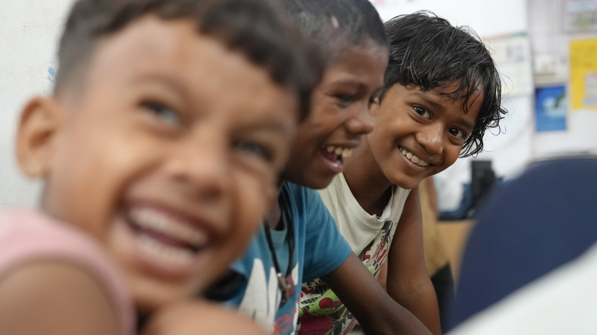
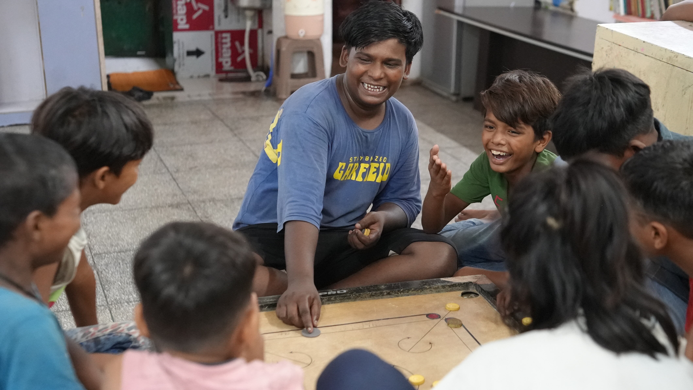

<section>
  <div class="container">
    <div class="ngo-team-header text-center">
      <span class="heading-badge">Who We Are</span>
      <h2 class="ngo-team-title title-heading mb-1">About Us</h2>
      <!-- <p class="ngo-team-subtitle">
         Stay updated with our latest news, events, and media coverage.
        </p> -->
    </div>
    <div class="about-grid">
      <div class="about-content">
        <h2 class="about-heading title-heading">An organization for children in need...</h2>
        <p>Jamghat is a non-profit organization comprising of inspired young members and volunteers working with street
          children and other vulnerable children since 2003 through its comprehensive care model. Jamghat aims to help
          children and women living and working on the streets of Delhi realize their dreams and rejoin society by
          offering opportunities to make them self-sustained and more independent. Jamghat seeks to rehabilitate street
          children and to raise awareness within society by using the medium of street theatre as well as interactive
          workshops, night-walks and other social means of communication.</p>
        <p>Jamghat aims not only to provide the homeless a home, but also to equip them with the tools needed to be an
          able, independent and responsible member of the society they inhabit. With the aim of being more than just a
          charity, Jamghat hopes to instil within each person they work with, that being a good human being is just as
          important as being a successful one.

          image</p>
        <!-- <div class="ab-img">
          
        </div> -->
      </div>
      <div class="ab-img">
        
      </div>
    </div>
    <div>
      <h2 class="ngo-team-title title-heading text-center mt-5 mb-5">What we aim for...</h2>
      <div class="mission-grid">
        <div class="mission-content">
          <div>
            
            <h4>Mission</h4>
            <p>To provide an environment where street children can grow to be physically and emotionally healthy
              individuals, be independent and live a life full of choices.
              <br>
              To use street and stage theatre as a tool to nurture self confidence in children and build awareness in
              our
              society about key social issues related to child protection and care.
            </p>
          </div>
          <div>
            <h4>Vission</h4>
            <p>To form a joyful and collective learning experience that facilitates full growth of street children.</p>
          </div>
        </div>
        <div class="aim-img">
          
        </div>
        <div>
          <div class="activities">
            <h4>Our Activities</h4>
            <div> <p class="activities-heading">Jamghat engages in the following primary activities:</p>
              <ul>
                <li>
                  Praangan: An outreach program focusing on delivering education to children in true sense. Here the linkage with Education is done through various creative mediums such as storytelling, songs, art & craft, sports/martial arts, theatre and others
                </li>
                <li>
                  Providing opportunities to street children through its children's residential homes and day care centres to engage in fun-learning, schooling, sports and extra-curricular activities. They also receive basic healthcare and life skills development.
                </li>
                <li>
                  Conducting theatre workshops, theatre performances on the streets as well as night walks for public awareness.
                </li>
                <li>
                  Running a vocational training cum livelihood generation tailoring unit for women from the extremely deprived strata.
                </li>
              </ul>

            </div>
          </div>
        </div>
      </div>
    </div>
  </div>
</section>